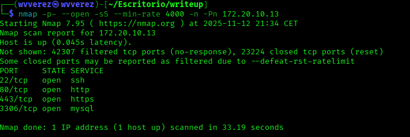

En el día de hoy vamos a resolver la máquina "ACEITUNO" una de mis máquinas preferidas de thl aclarar que la primera mitad fue resuelta en kali y la otra mitad en parrot por problemas técnicos
Vamos con la resolución lo primero que hice fue un sencillo escaneo de red nmap para buscar puertos abiertos.

Bien, vemos 4 puertos abiertos el 22,80,443 y 3306... Vamos a realizar un segundo escaneo para determinar el servicio y versión misma.